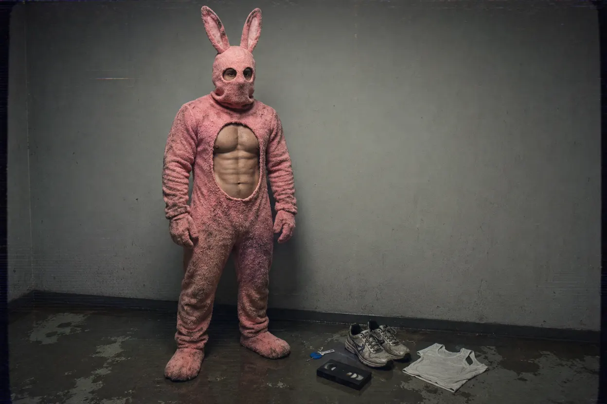
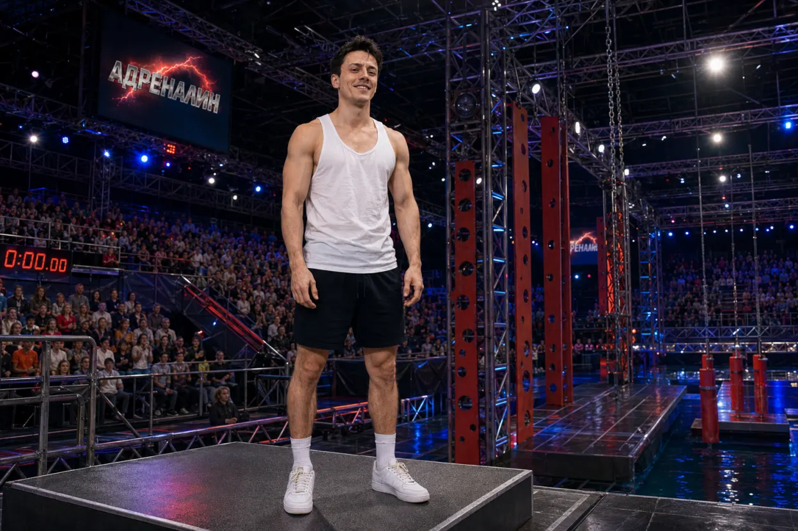
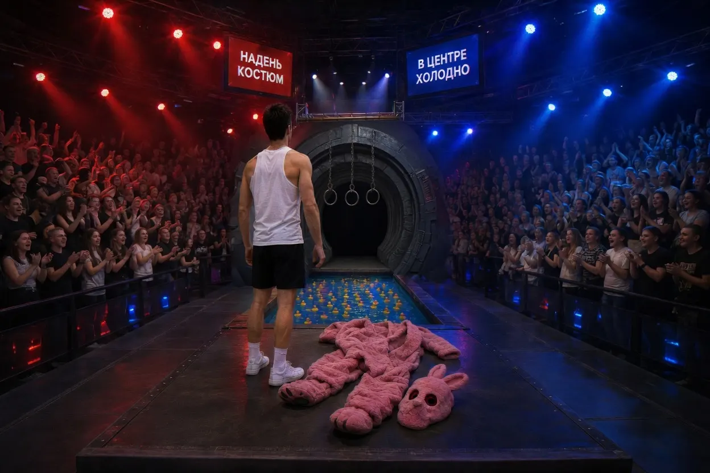
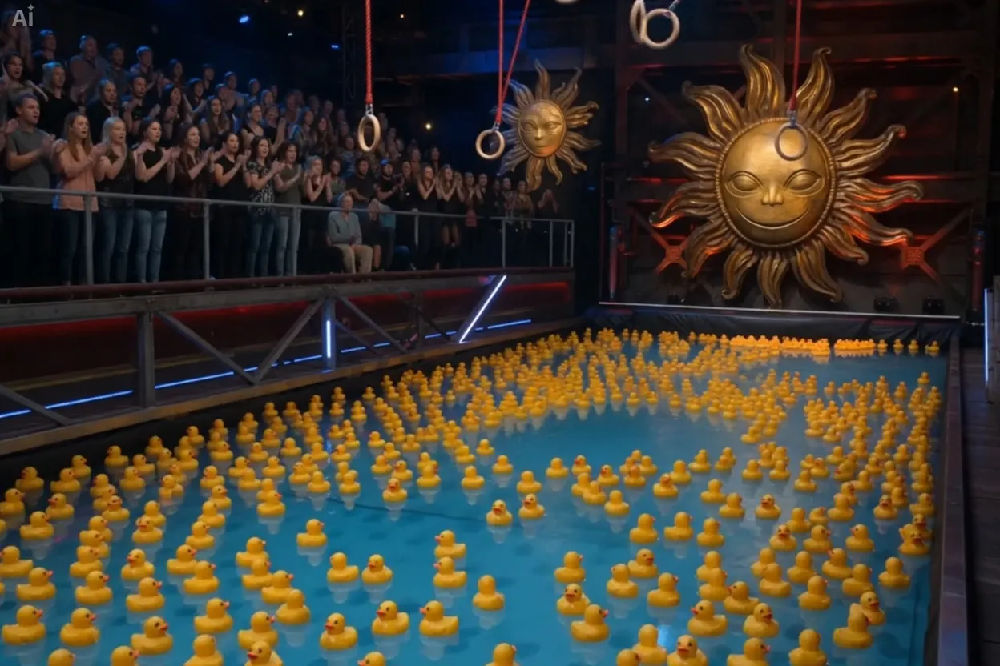
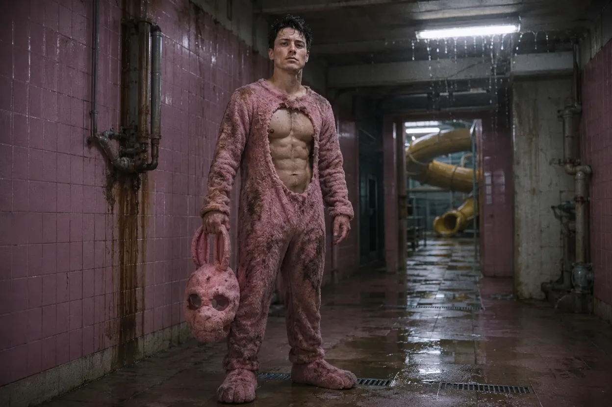
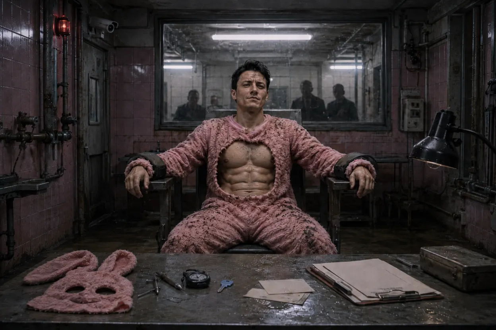
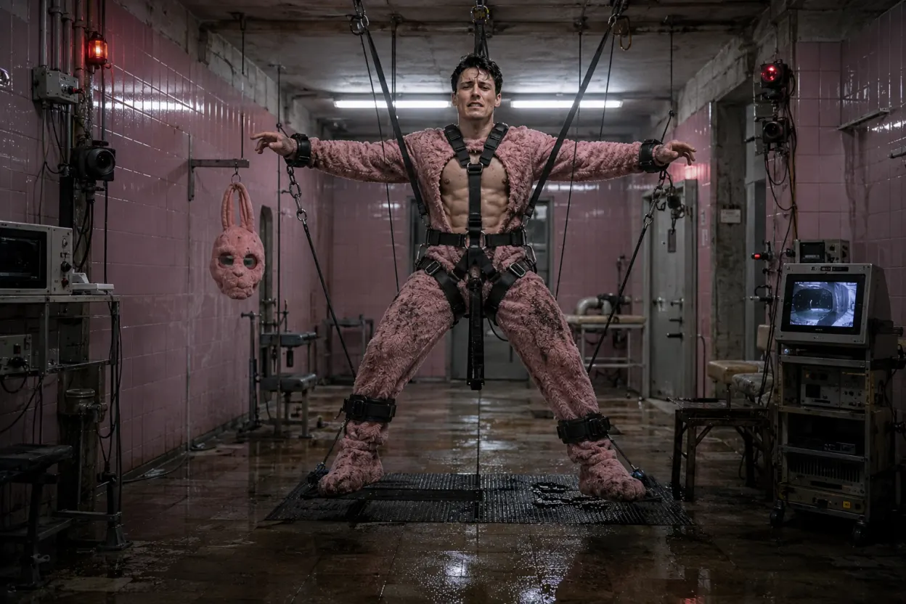
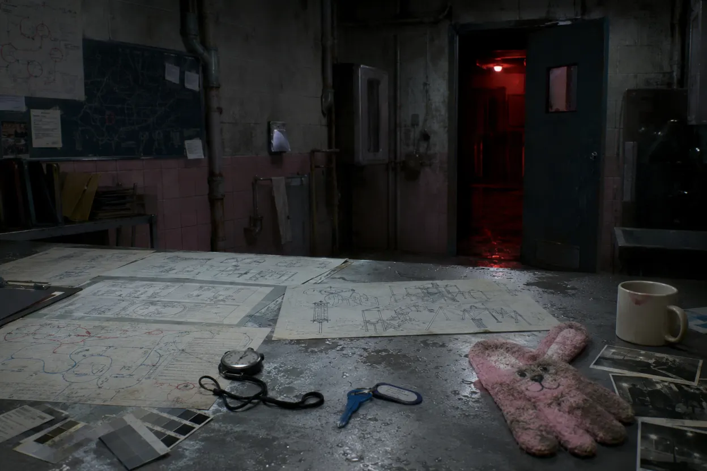
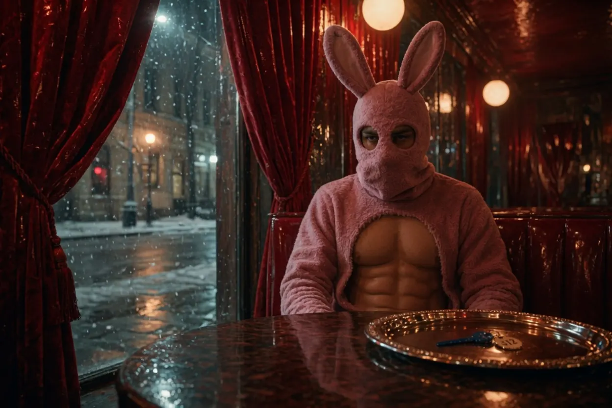
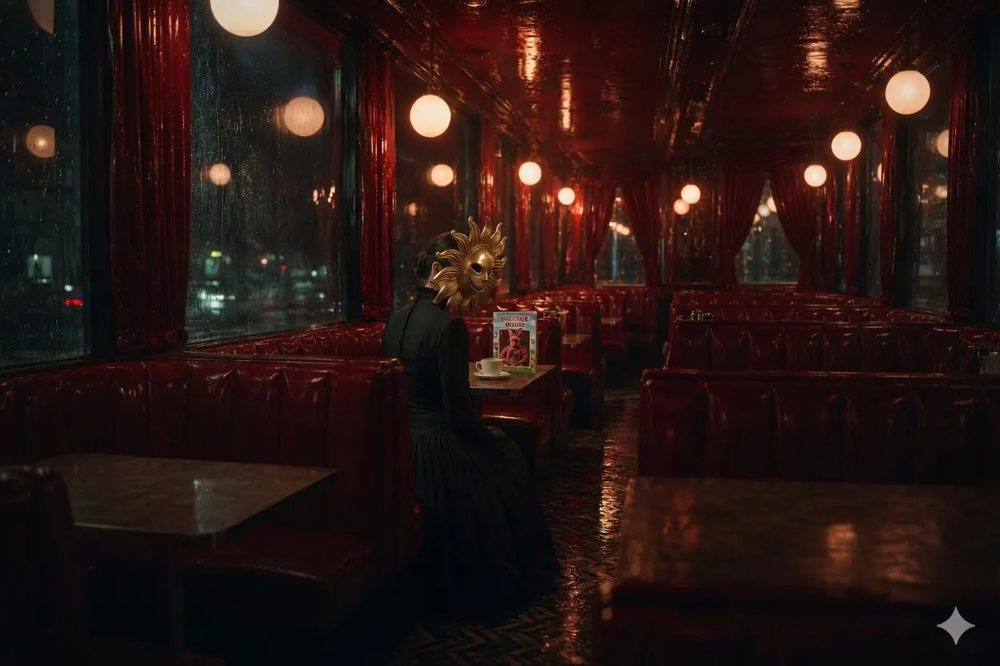

ДОСЬЕ МАРШРУТНОГО ПЕРСОНАЛА
ОБЪЕКТ: «ЗАЯЦ» / КИРИЛЛ ЗАЙЦЕВ
ОБЪЕКТ: «ЗАЯЦ» / КИРИЛЛ ЗАЙЦЕВ
СТАТУС: АКТИВЕН
ВНУТРЕННИЙ ИНДЕКС: AD-312-02-019-KZ
ПРЕДЫДУЩИЙ СТАТУС: УЧАСТНИК ТЕЛЕПРОГРАММЫ «АДРЕНАЛИН»
ТЕКУЩИЙ СТАТУС: ДИЗАЙНЕР МАРШРУТОВ / ПРОГРАММА «ВЕРНИ СЕБЕ ДЕТСТВО»
МЕСТО ПЕРВИЧНОГО ВХОДА: ФИНАЛЬНЫЙ БАССЕЙН ТЕЛЕСТУДИИ «АДРЕНАЛИН»
МЕСТО ПОВЫШЕНИЯ: КАФЕ «КРАСНАЯ КОМНАТА»

ВИЗУАЛЬНОЕ ОПИСАНИЕ
Объект использует модифицированный костюм розового зайца с открытым брюшным сектором, усиленной мышечной имитацией и сохранением полного диапазона движений верхнего корпуса.
Несмотря на внешний вид, характерный для низового анимационного персонала, объект не демонстрирует стандартных признаков деградации Аниматоров Уровня 1.
- походка уверенная;
- реакция на угрозу игровая;
- реакция на боль положительная;
- реакция на замкнутое пространство соревновательная.
Костюм объекта не выполняет функцию психологической защиты. Напротив, используется как знак добровольного допуска к повышенному уровню риска.
БИОГРАФИЧЕСКИЕ ДАННЫЕ
Кирилл Зайцев получил известность как участник спортивного телесоревнования «Адреналин».
Победитель первого сезона. Фаворит зрителей.
Внутри фанатского сообщества получил прозвище «Заяц» — первоначально в связи с фамилией и манерой прохождения вертикальных препятствий.

Согласно архивным материалам, объект демонстрировал аномально высокую потребность в повторном прохождении опасных участков трассы, даже после формальной победы.
В медицинских и производственных документах это качество позднее было классифицировано как:
АДРЕНАЛИНОВАЯ НЕНАСЫТНОСТЬ / ФОРМА УСТОЙЧИВОЙ ДОБРОВОЛЬНОЙ САМОПОДАЧИ
ПЕРВИЧНЫЙ ИНЦИДЕНТ
Во время финального выпуска второго сезона объекту было предложено пройти заключительное испытание в костюме розового зайца.
Официальная версия телеканала: костюм использовался как элемент развлекательного формата.
Внутренняя версия Администрации: костюм являлся первым регистрационным слоем маршрута.

После падения объекта в финальный бассейн зрители ожидали его появления на поверхности в течение шестидесяти минут.
Объект на поверхность не вернулся.

Видеозапись содержит кратковременную служебную надпись:
«ДОБРОВОЛЬНОЕ УЧАСТИЕ ЗАРЕГИСТРИРОВАНО»
В начале нулевых данный фрагмент был признан техническим браком.
В настоящий момент фрагмент признан корректно оформленным согласием.
ПЕРВИЧНАЯ АДАПТАЦИЯ
После транспортировки через водный маршрут объект был зачислен в анимационный резерв.
Стандартная процедура предполагала снижение воли, закрепление костюмной зависимости, перевод речи в простые сигналы и назначение на приманочную работу в детских зонах.
Процедура не дала ожидаемого результата.

Объект сохранял речь, ориентацию, память о предыдущей жизни и выраженную способность к принятию самостоятельных решений.
На попытки ограничить движение объект реагировал не паникой, а интересом.
На попытки наказания — повышением эффективности.
На закрытые двери — поиском второго маршрута.
На ловушки — повторным прохождением до улучшения результата.

КАДРОВЫЙ ПРОФИЛЬ
Несмотря на очевидную склонность к контролируемой боли, объект не проявляет типичной пассивности Аниматора.
Кирилл Зайцев не просит освободить его.
Кирилл Зайцев не просит оставить его в покое.
Кирилл Зайцев просит показать следующий уровень.
Именно это качество было признано непригодным для обычного содержания и перспективным для кадрового использования.
Внутренний комментарий службы наблюдения:
«Объект не ломается под давлением. Объект воспринимает давление как приглашение».
СЛУЖЕБНЫЙ РОСТ
Этап 1. АНИМАТОР
Объект использовался в качестве розового Зайца на маршрутах с повышенной травматичностью.
Показал исключительную устойчивость к водным трубам, закрытым лабиринтам, движущимся платформам, механическим клешням, игровым комнатам без выхода и ложным спасательным маршрутам.
Этап 2. ТЕСТИРОВЩИК
После неоднократного самостоятельного выхода из ловушек объект был переведен в тестовую группу.

Основные обязанности тестировщика: первичное прохождение новых маршрутов, проверка давления, глубины, скорости и психологической убедительности ловушек.
Объект определял точки, в которых обычный гость теряет волю к сопротивлению, и фиксировал моменты, где страх переходит в послушание.
Комментарий объекта после прохождения Маршрута 312-Б:
«Слишком легко. Они успеют понять, что это ловушка».
Комментарий признан ценным.
Этап 3. ДИЗАЙНЕР МАРШРУТОВ
После допуска в служебные зоны объект начал участвовать в разработке маршрутов программы «Верни себе детство».
- препятствия с добровольным входом;
- ловушки, замаскированные под соревнование;
- маршруты, где жертва сама хочет доказать, что сможет пройти дальше;
- сценарии, в которых боль воспринимается как достижение;
- игровые уровни для Волонтеров с высоким порогом страха.

ПОВЫШЕНИЕ
Решение о повышении было принято в кафе «Красная Комната».
Согласно отчету транзитного персонала, объекту был предоставлен выход через красную штору.
За шторой находилась обычная зимняя улица. Свежий воздух. Снег. Реальность.
Объект подошел к выходу, задержался у порога и вернулся к столу.

На серебряном подносе лежал Синий ключ с брелоком 312.
Рядом находился новый контракт.
В соседней кабинке присутствовала Женщина в маске Солнца.
Она не давала прямых указаний. Она только наблюдала.

Объект подписал документы без принуждения.
После подписания произнес:
«Свобода — это когда игра заканчивается. Я еще не закончил».
Данная фраза считается кадрово значимой.
ПРИМЕЧАНИЕ ГЛАВВРАЧА
Инициатива повышения исходила от Женщины в маске Солнца.
Мотивы не раскрыты.
Согласно внутренней переписке, Старший Проводник отметила, что объект обладает редкой формой взрослой незавершенности: он не желает вернуться в детство, но готов бесконечно доказывать, что способен его пережить заново.
Цитата из закрытого протокола:
«Некоторым сотрудникам достаточно показать выход. Некоторым — боль. Этому нужно показать, что за болью есть архитектура».
ПСИХОЛОГИЧЕСКАЯ ОЦЕНКА
Объект не является стандартным Волонтером.
Волонтеры приходят в комплекс, чтобы почувствовать чужой страх.
Зайцев остается, чтобы превратить собственный страх в систему.
Объект демонстрирует устойчивое влечение к опасности, но не теряет профессиональной концентрации.
Мазохистические черты выражены, однако не снижают эффективность. Напротив, повышают ее.
Соревновательный инстинкт остается доминирующим.
ОСОБЫЕ НАБЛЮДЕНИЯ
Объект испытывает раздражение при слове «жертва».
Предпочитает термины:
- участник;
- игрок;
- финалист;
- тестировщик;
- следующий.
При встрече с новыми Аниматорами не проявляет сочувствия, но иногда подсказывает способ выбраться из ловушки.
Данные подсказки почти всегда ведут к более глубокому уровню комплекса.
Следовательно, помощь объекта не рекомендуется считать помощью.
ПРОИЗВОДСТВЕННАЯ ЦЕННОСТЬ
Кирилл Зайцев доказал, что отдельные взрослые особи могут быть интегрированы в систему не через деградацию, зависимость или шантаж, а через предоставление им правильно оформленной опасности.
Он является первым подтвержденным случаем успешного перехода:
УЧАСТНИК ЭФИРА → АНИМАТОР → ТЕСТИРОВЩИК → ДИЗАЙНЕР ВОЛОНТЕРСКОЙ ПРОГРАММЫ
Данный карьерный маршрут рекомендован к дальнейшему изучению.
ОБНОВЛЕННОЕ ЗАКЛЮЧЕНИЕ
Объект Кирилл Зайцев не был сломлен Администрацией.
Объект был найден.
В кафе «Красная Комната» объекту был предоставлен выход.
За красной шторой находились обычная улица, снег и реальность, не требующая дальнейшего прохождения.
На столе перед объектом находился Синий ключ.
Администрация задала объекту единственный вопрос, не требующий слов:
выход или ключ.
Объект выбрал ключ.
После этого объект отказался от выхода, принял условия дальнейшего маршрута и запросил допуск к следующему уровню.
Данное поведение считается удовлетворительным.